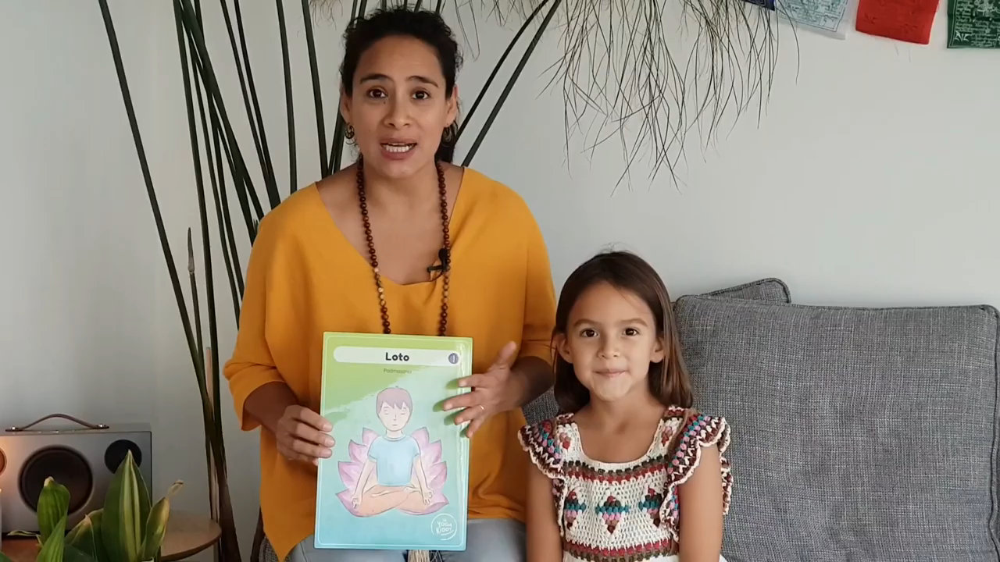

Junto a la mejor compañera del mundo 🌎, les compartimos un video que hicimos con la Postura del Loto o Padmasana 🧘♂️, la cual puede ser una hermosa actividad para hacer en familia.
La postura que realizamos aquí con Luz, es el Medio Loto. La diferencia entre ambas, es que para ésta solo debes poner un pie sobre tu muslo. Junto a eso, hemos realizado un mudra, conocido como Chin Mudra, el cual incrementa la energía y la concentración, ayuda a aliviar trastornos físicos, estimula la memoria, la concentración, etc.
🌱 Esta postura nos ofrece muchos beneficios tales como:
• Brinda flexibilidad.
• Fortalece las caderas.
• Ayuda a estirar las rodillas y los tobillos.
• Es perfecta para meditar.
• Da tranquilidad.
• Mejora la concentración.
• Es ideal para mejorar la postura porque brinda estabilidad.
• Te hace sentir muy bien.
• Es excelente para meditar o realizar técnicas de respiración yóguica.
Esperamos que la disfruten tanto como nosotras 💜
Un abrazo,
Carmen